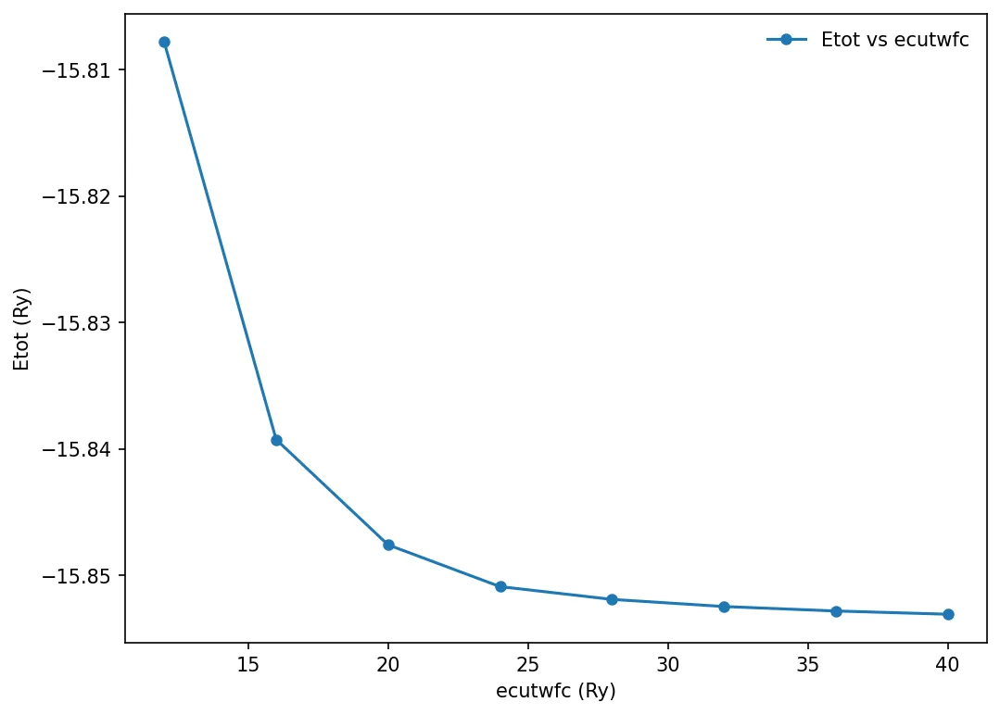
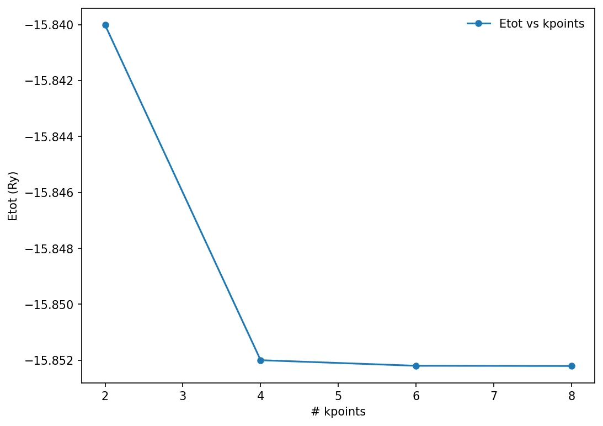
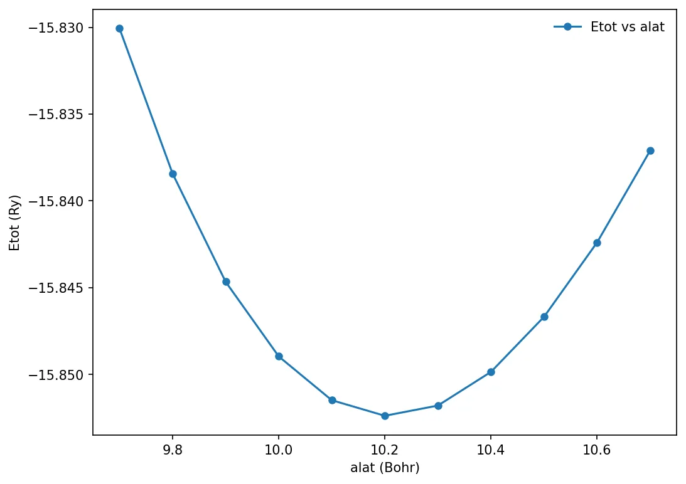

Testes de convergência
Convergence with cutoff energy using PWTK
We can automate the previous self consistent calculation by varying a certain
parameter. Say we want to check the total energy of the system for various
values of ecutwfc. We can do that by using pwtk script.
# load the pw.x input from file
load_fromPWI pw.scf.silicon.in
# open a file for writing resulting total energies
set fid [open etot_vs_ecutwfc.dat w]
# loop over different "ecut" values
foreach ecut { 12 16 20 24 28 32 } {
# name of I/O files: $name.in & $name.out
set name si_scf_ecutwfc-$ecut
# set the pw.x "ecutwfc" variable
SYSTEM "ecutwfc = $ecut"
# run the pw.x calculation
runPW $name.in
# extract the "total energy" and write it to file
set Etot [::pwtk::pwo::totene $name.out]
puts $fid "$ecut $Etot"
}
close $fidTo run the above script:
pwtk si_scf_ecutoff.pwtkNow we can plot the total energy with respect to ecutwfc. The data is in
etot-vs-ecutwfc.dat
We will use matplotlib to make the plots. Here is the python code for plotting:
import matplotlib.pyplot as plt
from matplotlib import rcParamsDefault
import numpy as np
%matplotlib inline
plt.rcParams["figure.dpi"]=150
plt.rcParams["figure.facecolor"]="white"
x, y = np.loadtxt('../src/silicon/etot-vs-ecutwfc.dat', delimiter=' ', unpack=True)
plt.plot(x, y, "o-", markersize=5, label='Etot vs ecutwfc')
plt.xlabel('ecutwfc (Ry)')
plt.ylabel('Etot (Ry)')
plt.legend(frameon=False)
plt.show()
Convergence test using UNIX shell script
We can do the convergence test with various parameters. We can calculate the total energy of the system by varying various parameters. We will use the shell script to automate the process with different cutoff energy values.
#!/bin/sh
NAME="ecut"
for CUTOFF in 10 15 20 25 30 35 40
do
cat > ${NAME}_${CUTOFF}.in << EOF
&control
calculation = 'scf',
prefix = 'silicon'
outdir = './tmp/'
pseudo_dir = './pseudos/'
/
&system
ibrav = 2,
celldm(1) = 10.0,
nat = 2,
ntyp = 1,
ecutwfc = $CUTOFF
/
&electrons
mixing_beta = 0.6
/
ATOMIC_SPECIES
Si 28.086 Si.pz-vbc.UPF
ATOMIC_POSITIONS (alat)
Si 0.0 0.0 0.0
Si 0.25 0.25 0.25
K_POINTS (automatic)
6 6 6 1 1 1
EOF
pw.x < ${NAME}_${CUTOFF}.in > ${NAME}_${CUTOFF}.out
echo ${NAME}_${CUTOFF}
grep ! ${NAME}_${CUTOFF}.out
doneMake sure the file has executable permission for the user:
chmod 700 si_script.shRun the script file:
./si_script.sh
# or
sh si_script.shWe can plot the energy vs cutoff energy, and choose a reasonable value.
Initially, I had problem in running the script in macOS. The problem occurred because the script file format was set to DOS. The file format can be checked in following way:
Open the file in vi editor. vi si_script.sh Now in vi editor command
mode (ESC key), type :set ff? This would tell you the file format. Now to
change file format, use the command :set fileformat=unix
Convergence test against the number of k-points
We can run similar convergence test against another parameter, and choose the best value of that particular parameter. Here we will try to calculate the number of k-points in the Monkhorst-Pack mesh.
load_fromPWI pw.scf.silicon.in
set fid [open etot-vs-kpoint.dat w]
foreach k { 2 4 6 8 } {
set name si_scf_kpoints-$k
K_POINTS automatic "$k $k $k 1 1 1"
runPW $name.in
set Etot [::pwtk::pwo::totene $name.out]
puts $fid "$k $Etot"
}
close $fidRun pwtk program:
pwtk si_scf_kpoints.pwtkx, y = np.loadtxt('../src/silicon/etot-vs-kpoint.dat', delimiter=' ', unpack=True)
plt.plot(x, y, "o-", markersize=5, label='Etot vs kpoints')
plt.xlabel('# kpoints')
plt.ylabel('Etot (Ry)')
plt.legend(frameon=False)
plt.show()
Convergence against lattice constant
Calculating total energy with respect to varying lattice constant.
load_fromPWI pw.scf.silicon.in
# please uncomment & insert value as determined in the "ecutwfc" exercise
SYSTEM { ecutwfc = 30 }
# please uncomment & insert values as determined in the "kpoints" exercise
K_POINTS automatic { 6 6 6 1 1 1 }
set fid [open etot-vs-alat.dat w]
foreach alat { 9.7 9.8 9.9 10.0 10.1 10.2 10.3 10.4 10.5 10.6 10.7 } {
set name si_scf_alat-$alat
SYSTEM "celldm(1) = $alat"
runPW $name.in
set Etot [::pwtk::pwo::totene $name.out]
puts $fid "$alat $Etot"
}
close $fidRun the above code:
pwtk si_scf_alat.pwtkx, y = np.loadtxt('../src/silicon/etot-vs-alat.dat', delimiter=' ', unpack=True)
plt.plot(x, y, "o-", markersize=5, label='Etot vs alat')
plt.xlabel('alat (Bohr)')
plt.ylabel('Etot (Ry)')
plt.legend(frameon=False)
plt.show()
Conteúdo adaptado de Convergence testing, do Quantum Espresso Tutorial de Pranab Das, sob licença CC BY 4.0. Alterações: layout, título e navegação traduzidos para o português.